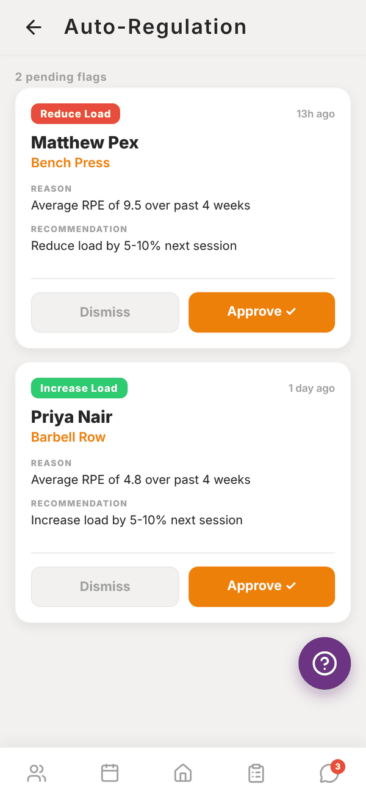
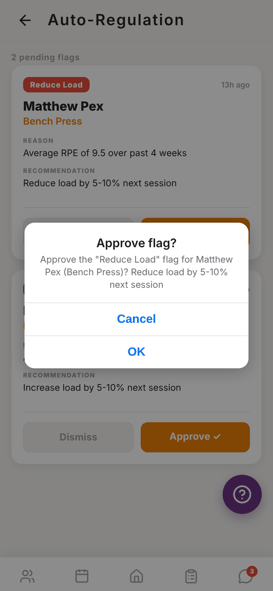

Totality for trainers
The auto-regulation engine
How Totality flags exercises that are too hard or too easy, and what happens when you approve a flag.
Auto-regulation watches how hard your clients rate their sets (RPE) and flags exercises where the load probably needs changing. You decide: nothing changes for the client until you approve a flag.
Open Auto-Regulation from the Home shortcuts. The red badge on the tile is how many flags are waiting.


When a flag appears#
Every time a session is saved (by the client or by you), Totality looks at the last 4 weeks of that client's sets that have an RPE:
- Average RPE of 9 or more on an exercise: a Reduce Load flag, "Reduce load by 5-10% next session".
- Average RPE of 5 or less: an Increase Load flag, "Increase load by 5-10% next session".
Only one pending flag per exercise per client is created at a time. Exercises without RPE logged are never flagged, so ask clients to fill in RPE.
Review a flag#
Each card shows the flag type, how long ago it was raised, the client, the exercise, the Reason (for example "Average RPE of 9.5 over past 4 weeks") and the Recommendation.
- Approve ✓: confirm in Approve flag?. Totality takes the client's most recent weight on that exercise and works out a new one: 7.5% lighter for Reduce Load, 7.5% heavier for Increase Load, rounded to the nearest 0.5. The client gets that as a recommended weight the next time they do the exercise, with a Why? explaining the reason. If their notifications are on, they also get a push: "Your trainer adjusted your training load".
- Dismiss: removes the flag from the list. Nothing changes for the client.
When nothing is waiting you see All clear.
If the exercise is bodyweight there's no weight to adjust. Approving just clears the flag and says so.
Questions#
Does approving change my programme?
No. Your programme stays the same. The client gets a recommended weight for that exercise, which shows when they log it.
Can I turn auto-regulation off?
There's no switch. If you don't want to use it, dismiss flags or ignore the tile.
Why did a client get flagged after one session?
The average covers all their logged sets for that exercise in the last 4 weeks, so even one session can be enough if it's the only one with RPE.